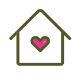

ABOUT
더 자세한 설명은 여기에 써있습니다
-
교과위교육과정위원회. 주 프로젝트로는 배움장터, 수업 간담회, 어때 프로젝트 등이 있다
-
총학총학생회. 학교애서 가장 큰 자치회라고 할수있다. 학생과의 소통을 중점으로 문제들을 개선해 나간다
-
 학생회학년학생회. 학년마다 학생회가 있고 주로 학급에서 햇찬나래를 진행하거나 학년 프로잭트를 기획한다
학생회학년학생회. 학년마다 학생회가 있고 주로 학급에서 햇찬나래를 진행하거나 학년 프로잭트를 기획한다